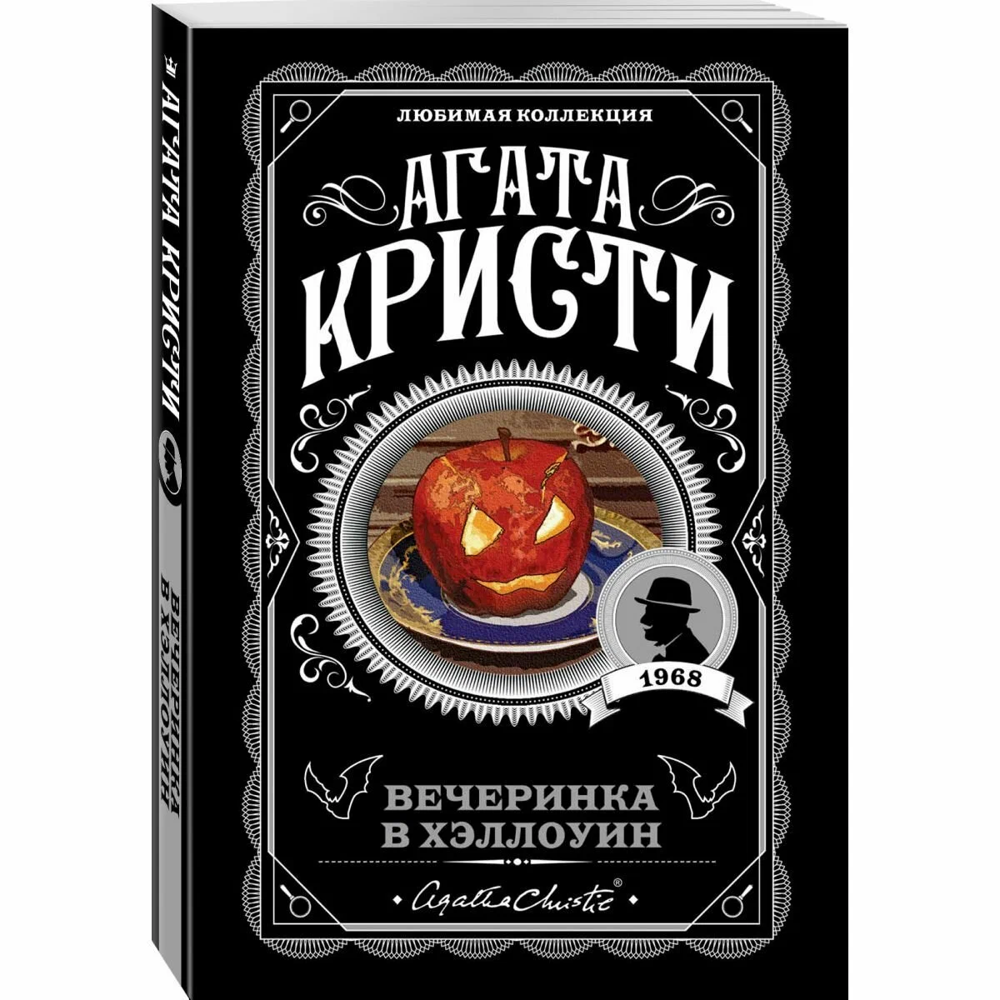

Нажмите на картинку для увеличения
В старинном особняке собираются гости на костюмированную вечеринку в честь Хэллоуина. Праздник идет своим чередом, пока одна из гостий, известная своим хвастовством, не заявляет, что была свидетелем настоящего убийства. Никто не воспринимает ее слова всерьез... пока ее не находят мертвой в книжном шкафу. Знаменитому сыщику Эркюлю Пуаро предстоит распутать это загадочное дело, в котором реальность переплетается с мистикой.
Одно из лучших дел Пуаро, где Агата Кристи мастерски сочетает классический детектив с атмосферой Дня всех святых.
© 2026 Интернет-магазин "Мир книг". Все права защищены.